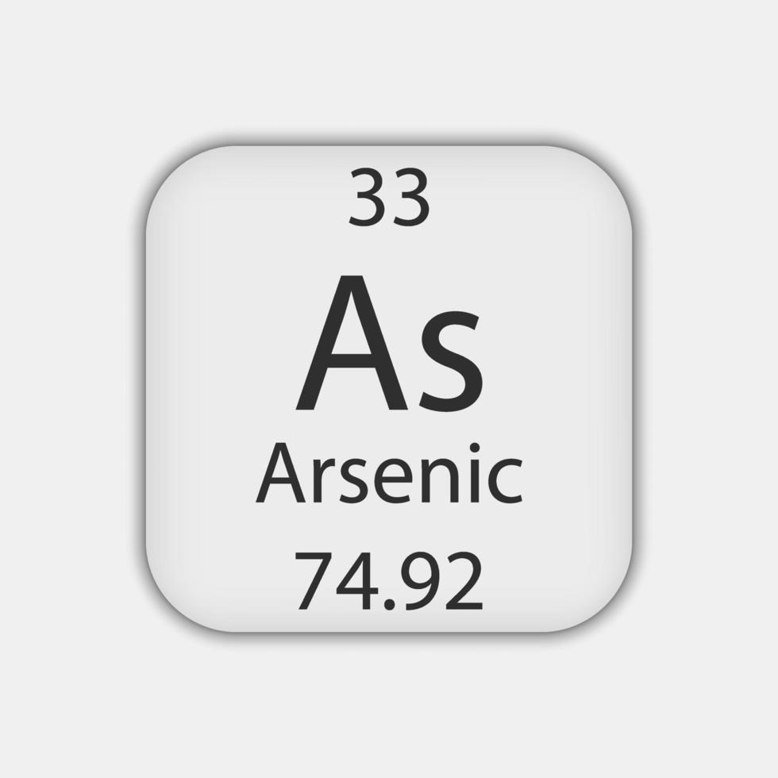
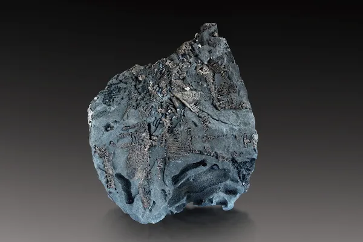
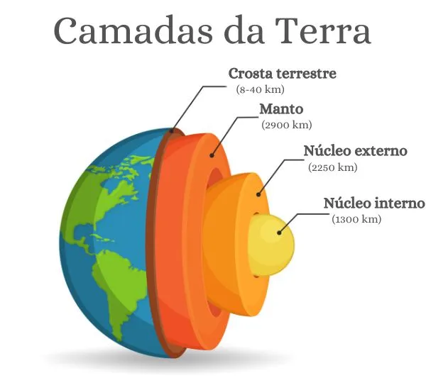

| Informações na Tabela |
Nome Arsênio Abreviação As |
 |
|---|---|---|
| Principais caracterís-ticas doelemento químico |
- Em temperatura ambiente (cerca de 20 °C a 25 °C)encontra-se no estado sólido - Em sua forma pura mais estável apresenta uma aparência sólida, cristalina, quebradiço e de coloração cinza metálica (ou cinza-prateada) e amarela. - Suas principais propriedades são: Condutividade, Solubilidade, Toxicidade. |
 |
| História da descoberta | -Descoberto pela primeira vez por volta do ano 1250 pelo monge e alquimista Alberto Magno. Ele aqueceu uma mistura de Ouro pimenta (um mineral de sulfeto de arsênio) com sabão, conseguindo isolar o elemento químico em sua forma elementar. (existem indícios de que alquimistas árabes e gregos antigos já tivessem obtido o arsênio puro acidentalmente em experimentos anteriores, mas sem registrar o processo de forma clara ou compreendê-lo como um novo elemento químico). | |
| Ocorrência Na natureza | ocorre naturalmente na crosta terrestre, estando presente em rochas, solos, águas subterrâneas, no ar e em organismos vivos. Raramente é encontrado em seu estado puro. O arsênio forma ligações principalmente com o enxofre e metais, aparecendo em minerais como a arsenopirita (arsênio, ferro e enxofre), o orpimento e o realgar. |  |
| Uso no Cotidiano | não possui usos domésticos comuns ou seguros no cotidiano atual devido à sua alta toxicidade, mas seus compostos aparecem de forma controlada ou industrial em setores específicos, são eles: Eletrônica e tecnologia: O arseneto de gálio é usado na fabricação de semicondutores, chips de computadores, células solares e luzes LED. Medicina: Derivados específicos de arsênio são restritos a tratamentos farmacêuticos avançados, como em terapias oncológicas (quimioterapia). Vidros especiais. | |
| Importância e riscos | É um semimetal de grande importância para a indústria de alta tecnologia, especialmente na fabricação de semicondutores e componentes eletrônicos essenciais para o mundo moderno. O arsênio é um semimetal altamente tóxico que se liga a proteínas e interrompe a produção de energia nas células, um exemplo é o caso de intoxicação por arsênio que matou quatro pessoas da mesma família no litoral do Rio Grande do Sul. | |
| Fontes consultadas |
|
|